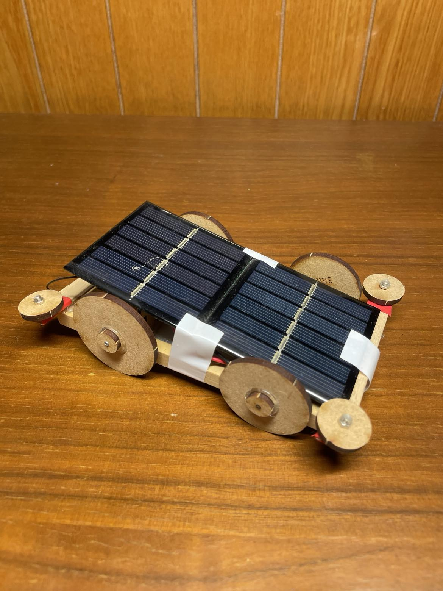
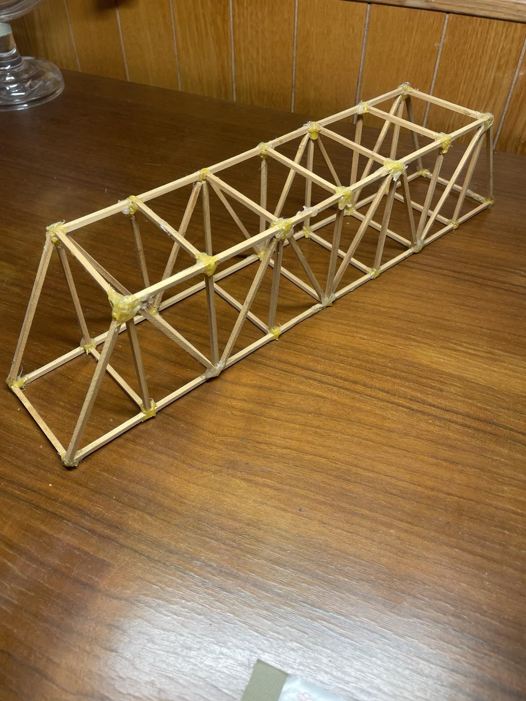

黃證哲 (Kevin) - 生活科技實作成果報告
滑動上方圖片查看顏色變化。此作品整合了木工切割、壓克力雕刻與電路焊接技術。內建可變電阻調整電流，實現紅、藍、綠、黃等不同色溫的轉換，並展現了清晰的硬體佈線邏輯。
此成品著重於聲學外殼的密封性與電路整合。我將鋰電池管理模組、藍牙接收器與擴大機版精密排列於木質共鳴箱內，確保低音穩定且具備便攜式的充電功能。

我們設計的太陽能車採用高靈敏度的光伏板，由於當時環境限制，它必須在特定波長的太陽能燈照射下，才能將光能高效轉化為動能。這種對光源的依賴性，不僅考驗了光板角度的調整，也讓我們在操作時更需精準掌握光線的投射路徑。

本作品的設計核心在於運用三角形結構的穩定性。回想起國中時期的承重競賽，許多參賽作品在加壓過程中相繼斷裂，唯有這座橋梁憑藉優異的剛性，最終仍完好如初。這份超越競賽強度的穩固性，正是它能完好保存至今的主因。